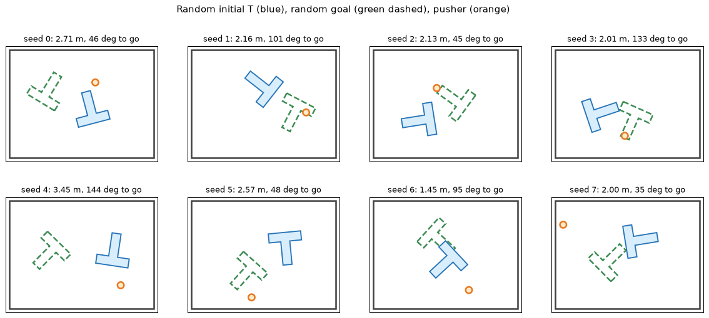
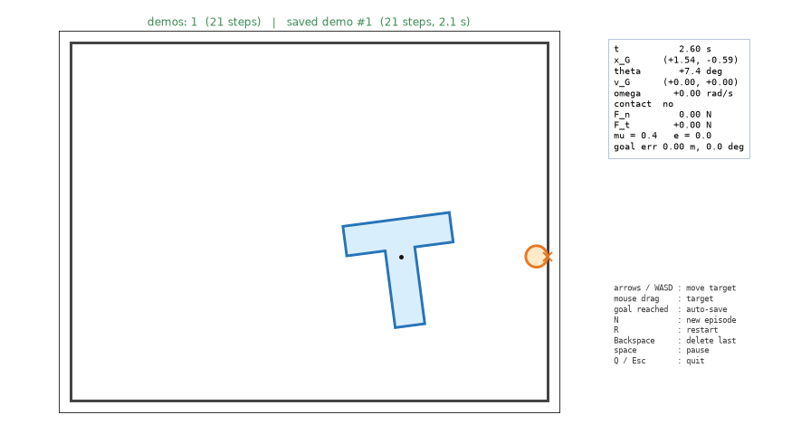
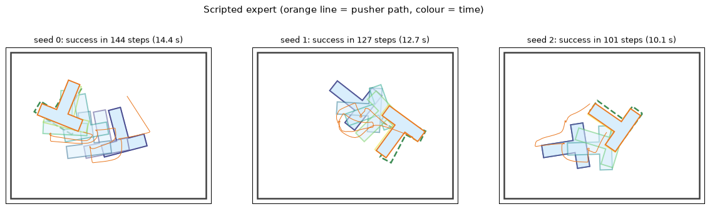
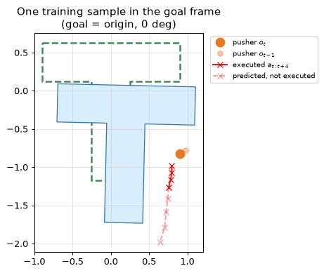
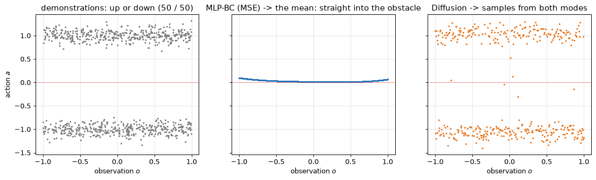
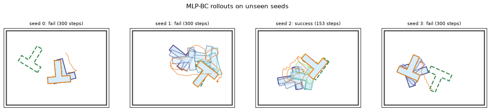
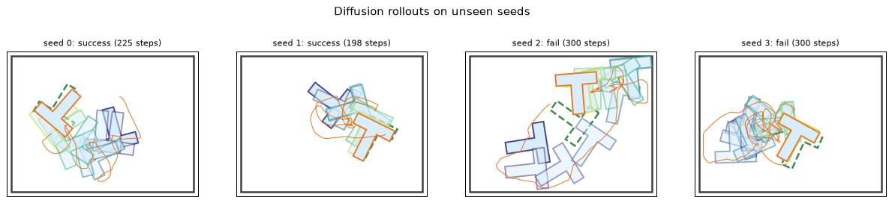
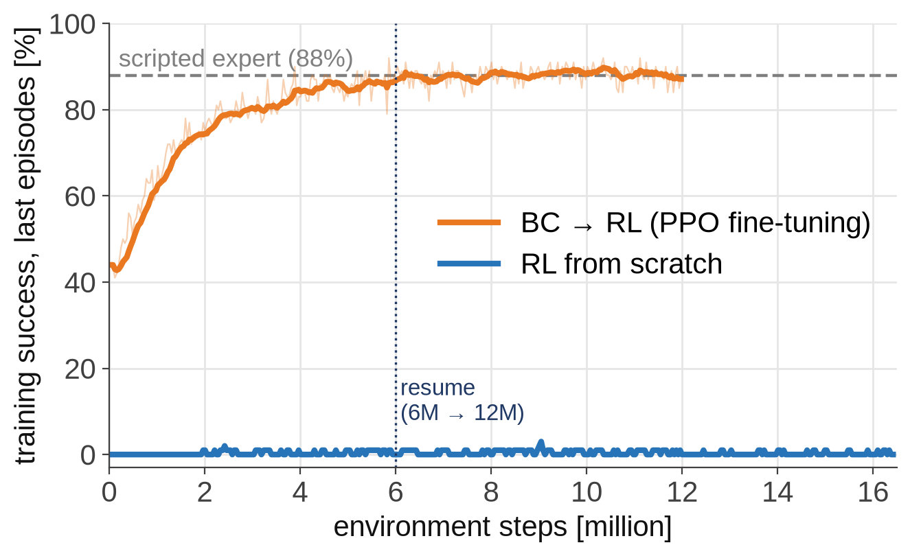
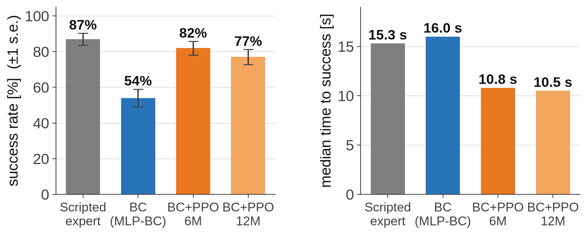
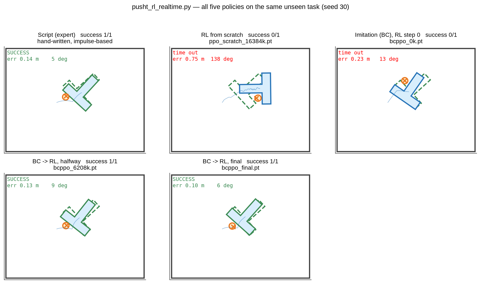

Learning to Push:
Imitation Learning and RL on PushT
Extended edition: contact physics derived and compared line by line with the tutorial code
The PushT simulator from the dynamics lecture becomes a training ground
Physicsimpulse · friction · walls
Demonstrationshuman or scripted expert
ImitationMLP-BC · Diffusion Policy
RL fine-tuningPPO, started from BC
Three questions answered with experiments in this lecture
Q1 — Data : how many demonstrations do we need to collect?
Q2 — Model : which network should learn from them — a regressor or a generative model?
Q3 — Beyond imitation : can reinforcement learning do better, from scratch or starting from the imitation policy?
Pipeline : demonstrations \(\mathcal D=\{(o_t,a_t)\}\) → dataset → policy \(\pi_\phi(\mathbf a\mid o)\) → closed-loop success rate on unseen tasks
One seed fixes the initial T pose, the goal pose and the pusher position
| What | Distribution |
|---|
| T start pose | \(x\sim\mathcal U(-2,2),\ y\sim\mathcal U(-1,1),\ \theta\sim\mathcal U(-\pi,\pi)\) |
| Goal pose | same; redrawn if too easy (\(<1\) m and \(<45^\circ\)) |
| Pusher | uniform in the arena, \(\ge 1.6\) from the T |
Success
\[\lVert\mathbf x_G-\mathbf x_g\rVert<0.15\ \text{m}\ \ \text{and}\ \ \lvert\theta-\theta_g\rvert<10^\circ\]
Seeds : demos use 100000+ (expert) and 200000+ (human); evaluation uses 0, 1, 2, … — tasks never seen in training.

Blue: T start · green dashed: goal · orange: pusher (seeds 0–7)
The policy moves the pusher's target at 10 Hz; the physics runs 20 substeps in between
State (8 numbers — what a human sees)
\[s_t=\big(\underbrace{x_P,\,y_P}_{\text{pusher}},\ \underbrace{x_G,\,y_G,\,\theta}_{\text{T}},\ \underbrace{x_g,\,y_g,\,\theta_g}_{\text{goal}}\big)\]
Action
\[a_t=(x^{*},\,y^{*})\ \ \text{= pusher target},\qquad \Delta t=0.1\ \text{s}\]
A PD controller pulls the pusher toward the target; contact with the T is the impulse model of the dynamics lecture.
One episode, saved to .npz
\[\tau=\big((s_0,a_0),(s_1,a_1),\dots,(s_{T-1},a_{T-1})\big)\]
| Array | Shape | Meaning |
|---|
| states | (N, 8) | \(s_t\) |
| actions | (N, 2) | \(a_t\) = target |
| episode_ends | (E,) | where each episode ends |
| seeds | (E,) | re-creates the start |
Only successful episodes are saved : imitating a failure teaches failure (filtered behavior cloning). Same format as the Diffusion Policy / LeRobot PushT data.
One env.step() = 0.1 s = 20 substeps of 5 ms, each with a 3-pass contact solver
Target\(a_t=(x^{*},y^{*})\)
PD pusher\(\mathbf x_P,\ \mathbf v_P\)
Contactpoint, \(\mathbf n\), depth
Impulse\(j_n,\ j_t\)
T motion\((\mathbf v_G,\omega)\to(\mathbf x_G,\theta)\)
Time steps
\[n_{\text{sub}}=\mathrm{round}\Big(\frac{\Delta t_{\text{ctrl}}}{\Delta t_{\text{phys}}}\Big)=\frac{0.1}{0.005}=20\]
Average contact force
\[\mathbf F\approx\frac{1}{\Delta t_{\text{ctrl}}}\sum_{\text{substeps}}\mathbf J,\qquad \mathbf J=\int\mathbf F\,dt\]
pusht_imitation.py : PushTEnv.step · pusht_keyboard_sim.py : advance
def step(self, action):
self.sim.target = np.clip(action, [x_min, y_min], [x_max, y_max])
self.sim.advance(self.control_dt) # 0.1 s
self.t += 1
def advance(self, frame_dt):
n = max(1, int(round(frame_dt / self.physics_dt)))
self._j_sum[:] = 0.0
for _ in range(n):
self.substep(self.physics_dt) # 5 ms
F = self._j_sum / (n * self.physics_dt) # impulse / time
The pusher is a controlled kinematic body; the T coasts and slows down by floor friction
1. PD control of the pusher
\[\mathbf a_P=K_p(\mathbf x^{*}-\mathbf x_P)-K_d\,\mathbf v_P\]
\(K_p=80,\ K_d=18\) : damping ratio \(\zeta=K_d/(2\sqrt{K_p})\approx1\) — fast, no overshoot. Speed limited to \(3\) m/s.
2. Floor friction as exponential decay
\[\mathbf v_G\leftarrow\mathbf v_G\,e^{-c_v\Delta t},\qquad \omega\leftarrow\omega\,e^{-c_\omega\Delta t}\]
3. Semi-implicit Euler
\[\mathbf x_G\leftarrow\mathbf x_G+\mathbf v_G\Delta t,\qquad \theta\leftarrow\theta+\omega\Delta t\]
pusht_keyboard_sim.py : KeyboardPushT.substep
# 1. pusher PD control toward the target
acc = self.kp * (self.target - P.pos) - self.kd * P.vel
P.vel += acc * dt
speed = np.linalg.norm(P.vel)
if speed > self.max_speed:
P.vel *= self.max_speed / speed
P.pos += P.vel * dt # new velocity first
# 2. damping 3. integrate the T
T.vel *= math.exp(-self.linear_damping * dt)
T.omega *= math.exp(-self.angular_damping * dt)
T.pos += T.vel * dt
T.angle += T.omega * dt
Consequence : released at speed \(v\), the T slides another \(\int_0^\infty v e^{-c_v t}dt=v/c_v\) — the expert slows down near the goal for this reason.
Composite body: two rectangles, each shifted to the T's centre of mass
Centre of mass (mass ∝ area)
\[\bar y=\frac{A_1y_1+A_2y_2}{A_1+A_2}\]
Rectangle + parallel-axis theorem
\[I_G=\sum_i\Big[\tfrac{m_i}{12}(a_i^2+b_i^2)+m_i\,d_i^2\Big]\]
| Value (\(m=1\)) | Result |
|---|
| top bar | \(1.8\times0.5\) |
| stem | \(0.5\times1.3\) |
| COM below the top edge | 0.627 |
| \(I_G\) | 0.434 |
pusht_keyboard_sim.py : make_T_geometry
top_area = W * top_t
stem_h = H - top_t
stem_area = stem_w * stem_h
total_area = top_area + stem_area
y_top, y_stem = H / 2 - top_t / 2, -top_t / 2
y_com = (top_area * y_top + stem_area * y_stem) / total_area
m_top = mass * top_area / total_area
m_stem = mass * stem_area / total_area
# own centre + parallel-axis shift to the COM
I_top = m_top * (W**2 + top_t**2) / 12 \
+ m_top * (y_top - y_com) ** 2
I_stem = m_stem * (stem_w**2 + stem_h**2) / 12 \
+ m_stem * (y_stem - y_com) ** 2
vertices[:, 1] -= y_com # body origin = COM
Work in the T's own frame: closest point on the 8 edges, then inside / outside
World → body frame
\[\mathbf c=R(\theta)^{\!\top}(\mathbf x_P-\mathbf x_G)\]
Closest point on edge \(i\)
\[t_i=\mathrm{clip}\Big(\frac{(\mathbf c-\mathbf a_i)\cdot(\mathbf b_i-\mathbf a_i)}{\lVert\mathbf b_i-\mathbf a_i\rVert^2},0,1\Big)\]
\[\mathbf q_i=\mathbf a_i+t_i(\mathbf b_i-\mathbf a_i),\quad i^{*}=\arg\min_i\lVert\mathbf q_i-\mathbf c\rVert\]
Penetration (pusher radius \(\rho\))
\[\delta=\begin{cases}\rho-d & \text{outside}\\ \rho+d & \text{inside}\end{cases},\qquad \mathbf n=R\,\mathbf n_{\text{local}}\]
pusht_imitation.py : circle_vs_T_fast (all edges at once)
R = rotation_matrix(body_angle)
c = R.T @ (circle_pos - body_pos) # world -> T
A = vertices
AB = np.roll(vertices, -1, axis=0) - A
t = np.clip(((c - A) * AB).sum(1) / (AB * AB).sum(1), 0, 1)
Q = A + t[:, None] * AB # closest points
d2 = ((Q - c) ** 2).sum(1)
i = int(np.argmin(d2))
d = math.sqrt(d2[i])
inside = ... # ray casting
if not inside and d >= radius:
return None
direction = (Q[i] - c) / d
n_local, pen = (-direction, radius + d) if inside \
else (direction, radius - d)
n = R @ n_local
return body_pos + R @ Q[i], n, pen
Speed : the numpy version replaces an 8-iteration Python loop — identical results on 2000 random cases, checked in the tutorial.
Relative velocity says whether the bodies approach; an impulse stops them
Velocity of the contact point
\[\mathbf v_C=\mathbf v_G+\boldsymbol\omega\times\mathbf r,\qquad \boldsymbol\omega\times\mathbf r=(-\omega r_y,\ \omega r_x)\]
\[v_n=(\mathbf v_C-\mathbf v_P)\cdot\mathbf n\ <0\ \ \Rightarrow\ \text{approaching}\]
Normal impulse
\[K_n=\frac1m+\frac{(\mathbf r\times\mathbf n)^2}{I},\quad j_n=-\frac{(1+e)\,v_n}{K_n}\]
\[\Delta\mathbf v_G=\frac{j_n\mathbf n}{m},\qquad \Delta\omega=\frac{\mathbf r\times j_n\mathbf n}{I}\]
pusht_keyboard_sim.py : resolve_impulse (part 1)
point, n, pen = contact
r = point - body.pos
v_rel = body.vel + omega_cross_r(body.omega, r) - other_vel
v_n = float(np.dot(v_rel, n))
if v_n < 0: # approaching
K_n = 1.0 / body.mass + cross2(r, n) ** 2 / body.inertia
j_n = -(1.0 + restitution) * v_n / K_n
J = j_n * n
body.vel += J / body.mass
body.omega += cross2(r, J) / body.inertia
def cross2(a, b): # 2D cross product, z only
return a[0] * b[1] - a[1] * b[0]
Kinematic pusher : \(1/m_P=0,\ 1/I_P=0\), so only the T's terms remain in \(K_n\). PushT uses \(e=0\) — after impact \(v_n^{+}=0\).
The same push at a different height splits into translation and rotation differently
Derivation: normal velocity change at C
\[\Delta v_n=\Big(\frac{j\mathbf n}{m}+\Delta\boldsymbol\omega\times\mathbf r\Big)\cdot\mathbf n=j\Big(\frac1m+\frac{(\mathbf r\times\mathbf n)^2}{I}\Big)=jK_n\]
\[v_n^{+}=v_n+jK_n=-e\,v_n\ \Rightarrow\ j=-\frac{(1+e)v_n}{K_n}\]
Stem's left face (\(x=-0.25\)), \(\mathbf v_P=(1,0)\), \(e=0,\ \mu=0\) : \(\ \mathbf r\times\mathbf n=-y,\ \ K_n=1+y^2/I\)
| Height \(y\) | \(K_n\) | \(j_n\) | \(\Delta v_x\) | \(\Delta\omega\) |
|---|
| 0 (COM) | 1.000 | 1.000 | 1.000 | 0.000 |
| −0.5 | 1.576 | 0.634 | 0.634 | 0.731 |
| −1.0 | 3.305 | 0.303 | 0.303 | 0.697 |
Output of resolve_impulse() — pusht_mini_sim.py, section 8
At the COM : pure translation. Far from the COM : smaller impulse, mostly rotation.
This is PushT : choosing the contact point chooses the motion — exactly what the scripted expert and the learned policies must do.
Cancel the sliding velocity at the contact, but never beyond \(\mu\,j_n\)
Tangent direction
\[\mathbf n=(n_x,n_y)\ \Rightarrow\ \mathbf t=(-n_y,\ n_x)\]
Impulse that stops sliding
\[v_t=\mathbf v_{\text{rel}}\cdot\mathbf t,\qquad K_t=\frac1m+\frac{(\mathbf r\times\mathbf t)^2}{I}\]
\[j_t^{*}=-\frac{v_t}{K_t}\]
Coulomb limit
\[j_t=\mathrm{clip}\big(j_t^{*},\,-\mu j_n,\,\mu j_n\big),\qquad \mu=0.4\]
pusht_keyboard_sim.py : resolve_impulse (part 2)
# friction, using the velocity after the normal impulse
t = np.array([-n[1], n[0]])
v_rel = body.vel + omega_cross_r(body.omega, r) - other_vel
v_t = float(np.dot(v_rel, t))
K_t = 1.0 / body.mass + cross2(r, t) ** 2 / body.inertia
j_t = float(np.clip(-v_t / K_t,
-friction * j_n, friction * j_n))
Jt = j_t * t
body.vel += Jt / body.mass
body.omega += cross2(r, Jt) / body.inertia
Effect : with friction the pusher can drag the T sideways and rotate it; with \(\mu=0\) it slips along the surface (try F in the keyboard demo).
A wall is a kinematic body with zero velocity — the same impulse function handles it
Wall = pusher with \(\mathbf v=\mathbf 0\)
\[\mathbf v_{\text{other}}=\mathbf 0,\qquad \frac1{m_{\text{wall}}}=0\]
Left wall: \(\ \delta=x_{\min}-p_{i,x}>0,\ \ \mathbf n=(1,0)\)
Penetration correction
\[\mathbf x_G\leftarrow\mathbf x_G+0.8\,\max(\delta-10^{-4},0)\,\mathbf n\]
Discrete time jumps \(t\to t+\Delta t\) leave overlaps that impulses alone cannot remove.
pusht_keyboard_sim.py : wall_contacts · substep (step 4)
world = body.pos + body.vertices @ rotation_matrix(body.angle).T
for p in world:
for depth, n in ((x_min - p[0], (1.0, 0.0)), ...):
if depth > 0:
contacts.append((p.copy(), np.array(n), depth))
# 4. contact solver: pusher-T and wall-T
for _ in range(3):
c = circle_vs_T(P.pos, P.radius, T.pos, T.angle, T.vertices)
if c is not None:
jn, jt = resolve_impulse(T, P.vel, c, e, mu)
for w in wall_contacts(T):
resolve_impulse(T, np.zeros(2), w, e, mu)
# end of resolve_impulse
body.pos += 0.8 * max(pen - 1e-4, 0.0) * n
Every line of the simulator is an equation from the dynamics lecture
| Lecture idea | Equation | Code |
|---|
| PD control | \(\mathbf a_P=K_p(\mathbf x^{*}-\mathbf x_P)-K_d\mathbf v_P\) | substep, step 1 |
| Parallel-axis theorem | \(I_G=\sum\big[\tfrac{m_i}{12}(a_i^2+b_i^2)+m_id_i^2\big]\) | make_T_geometry |
| Relative velocity | \(\mathbf v_C=\mathbf v_G+\boldsymbol\omega\times\mathbf r\) | omega_cross_r |
| Restitution | \(v_n^{+}=-e\,v_n^{-}\) | j_n = -(1+e) v_n / K_n |
| Linear impulse–momentum | \(\Delta\mathbf v_G=\mathbf J/m\) | body.vel += J / m |
| Angular impulse–momentum | \(\Delta\omega=(\mathbf r\times\mathbf J)/I\) | body.omega += cross2(r, J) / I |
| Coulomb friction | \(\lvert j_t\rvert\le\mu j_n\) | np.clip(-v_t / K_t, ...) |
| Impulse = force × time | \(\mathbf F\approx\sum\mathbf J/\Delta t\) | advance |
Files : derivations in pusht_mini_sim.py · real-time version in pusht_keyboard_sim.py · random tasks in pusht_imitation.py
python pusht_imitation.py collect — the keyboard simulator with a recorder added

Recorder window: arrows / WASD or mouse drag move the target; reaching the goal auto-saves
Three rules for clean data
Fixed 10 Hz : the screen draws at 20 fps, but \((s_t,a_t)\) is recorded every 0.1 s — one human step = one env.step().
Idle start trimmed : time spent thinking before the first move is not recorded, so the policy never learns to stand still.
Physics fixed : friction / restitution switches are off — same state, same consequence.
Keys : N new task · R restart · Backspace delete last · Space pause
Cost : one human demo takes 15–30 s, so 200 demos take 1.5–2 hours → we also need an automatic demonstrator.
A "virtual human" that chooses where to push with the lecture's impulse equations
(1) Where to push — unit impulse \(\mathbf n_k\) at candidate \(C_k\)
\[\Delta\mathbf v_G=\frac{\mathbf n_k}{m},\qquad \Delta\omega=\frac{\mathbf r_k\times\mathbf n_k}{I}\]
\[k^{*}=\arg\max_k\ \frac{\mathbf c_k\cdot\mathbf d}{\lVert\mathbf c_k\rVert\,\lVert\mathbf d\rVert}\]
Candidates : 8 edges × 3 points; \(\mathbf d\) = desired \((\Delta x,\Delta y,L\,\Delta\theta)\), \(\mathbf c_k\) = its effect.
(2) Approach : go to a standoff point; orbit around the T if the straight path is blocked.
(3) Push : along \(\mathbf n_k\), slowing in proportion to the remaining error (the T slides \(\approx v/c_v\) after release).

Expert rollouts (orange: pusher path, colour: time) — success ≈ 88–91 % on random tasks
Score each candidate push by how well its impulse response points toward the goal
Desired change (\(L=0.8\))
\[\mathbf d=\big(x_g-x_G,\ y_g-y_G,\ L(\theta_g-\theta)\big)\]
Response to a unit impulse at \(C_k\)
\[\mathbf c_k=\Big(\frac{\mathbf n_k}{m},\ L\,\frac{\mathbf r_k\times\mathbf n_k}{I}\Big)\]
Cosine score
\[s_k=\frac{\mathbf c_k\cdot\mathbf d}{\lVert\mathbf c_k\rVert\lVert\mathbf d\rVert}\]
Penalty for pushing into a touching wall; +0.1 for keeping the same contact.
pusht_imitation.py : ScriptedExpert.act
e = sim.goal_pos - T.pos
d = np.array([e[0], e[1],
self.L * wrap_angle(sim.goal_angle - T.angle)])
for k, (c_local, out_local) in enumerate(self.cands):
cw, out = T.pos + R @ c_local, R @ out_local
n_in, r = -out, cw - T.pos
c = np.array([n_in[0] / T.mass, n_in[1] / T.mass,
self.L * cross2(r, n_in) / T.inertia])
score = c @ d / (np.linalg.norm(c) * d_norm + 1e-9)
for n_wall in walls:
if n_in @ np.array(n_wall) < -0.3:
score -= 0.6 # into that wall
if k == self.cur:
score += 0.1 # hysteresis
# push: slower when close to the goal
step = float(np.clip(0.3 * d_norm, 0.04, 0.12))
return P.pos - out * (step + 0.04)
Published PushT and manipulation work uses 50–200 demonstrations per task
| Source | Task | Demonstrations |
|---|
| Diffusion Policy (Chi et al., 2023) | PushT, fixed goal, random start | 200 human (≈ 25k steps) |
| LeRobot pusht dataset | same task | 206 episodes, 25,650 frames |
| ACT / ALOHA (Zhao et al., 2023) | real bimanual robot | 50 per task |
Suggested plan for human demonstrations (15–30 s each)
| Stage | Demos | Time | Purpose |
|---|
| Pipeline check | 10–20 | 10 min | save / load / train runs, loss goes down |
| First results | 50–100 | 30–60 min | successes start; study the failures |
| Usable policy | ≥ 200 | 1.5–2 h | Diffusion Policy paper scale |
More important than the count : spread-out initial conditions, a consistent strategy, and discarded failures. Our goal is random too — harder than the original PushT.
Ride along with the goal — the same idea as relative motion in rigid-body kinematics
\[\tilde{\mathbf p}=R(\theta_g)^{\!\top}(\mathbf p-\mathbf x_g),\qquad \tilde\theta=\theta-\theta_g\]
\[o_t=\big(\tilde x_P,\ \tilde y_P,\ \tilde x_G,\ \tilde y_G,\ \cos\tilde\theta,\ \sin\tilde\theta\big)\]
\[\tilde{\mathbf a}_{t+i}=R(\theta_g)^{\!\top}\big(\mathbf a_{t+i}-\mathbf x_P(t)\big)\]
| Action representation (goal frame) | MLP-BC | Diffusion |
|---|
| absolute target position | 26 % | 20 % |
| offset from the current pusher | 36 % | 46 % |

One training sample: goal at the origin, 0°
Without the goal frame : 0 % success for both models — a good representation saves data.
A rotation and a translation — written out by hand so it works on any batch shape
\[\tilde{\mathbf p}=R(\theta_g)^{\!\top}(\mathbf p-\mathbf x_g)=\begin{pmatrix}c&s\\-s&c\end{pmatrix}\mathbf v\]
\[o_t=\big(\tilde{\mathbf x}_P,\ \tilde{\mathbf x}_G,\ \cos\tilde\theta,\ \sin\tilde\theta\big)\]
\[\tilde{\mathbf a}=R(\theta_g)^{\!\top}(\mathbf a-\mathbf x_P),\quad \mathbf a=\mathbf x_P+R(\theta_g)\tilde{\mathbf a}\]
State layout: \(s=(x_P,y_P,x_G,y_G,\theta,x_g,y_g,\theta_g)\) → indices 0–7.
pusht_imitation.py : to_goal_frame · make_obs · action_to_model
def to_goal_frame(points, state, origin=None):
c, s = math.cos(state[7]), math.sin(state[7])
v = points - (state[5:7] if origin is None else origin)
return np.stack([ c * v[..., 0] + s * v[..., 1],
-s * v[..., 0] + c * v[..., 1]], -1)
def make_obs(state):
p = to_goal_frame(state[0:2], state)
T = to_goal_frame(state[2:4], state)
dth = state[4] - state[7]
return np.array([p[0], p[1], T[0], T[1],
math.cos(dth), math.sin(dth)])
def action_to_model(actions, state):
return to_goal_frame(actions, state, origin=state[0:2])
See two frames, plan eight actions, execute four, then re-plan
Observe\((o_{t-1},\,o_t)\), \(T_o=2\)
Predict\(\mathbf a_{t:t+8}\), \(H=8\) (0.8 s)
Executefirst \(T_a=4\) actions
Re-planreceding horizon
Two frames : the difference gives velocity — is the T still sliding?
Chunks : one-step predictions change every 0.1 s and jitter; a chunk commits to a motion for a moment.
Normalize : \(z=(x-\mu)/\sigma\), statistics from the training set only.
Split by episode : neighbouring steps are nearly identical — a step-wise split leaks data into validation.
Trade-off : 4 steps run open-loop, so an unexpected slide is corrected only at the next re-plan.
MSE learns the average action — the average of two good actions can be bad
\[\min_\phi\ \mathbb E_{(o,a)\sim\mathcal D}\big\lVert\pi_\phi(o)-a\big\rVert^2\quad\Longrightarrow\quad \pi^{*}(o)=\mathbb E[a\mid o]\]

Toy problem: demonstrations avoid an obstacle up or down (50/50). MLP-BC learns \(a\approx0\) — straight into it; Diffusion samples both modes.
In PushT : "go around the left or the right side of the T?" — MLP-BC hesitates in between; human demos are even more multimodal.
Learn a distribution \(p(a\mid o)\) instead of a single average action
| Model | Output | Multimodal | Notes |
|---|
| MLP-BC (MSE) | one point | no (mean) | fastest, simplest — baseline |
| MLP-BC + action chunk | \(H\) points | no | temporally consistent |
| GMM / MDN | \(K\) Gaussians | partly | number of modes \(K\) fixed in advance |
| VQ-BeT | discrete code + offset | yes | Transformer |
| ACT (CVAE + Transformer) | chunk | yes | real robot, 50 demos |
| Diffusion Policy | chunk, sampled | yes | standard PushT baseline, stable training |
Our choice : MLP-BC as the baseline, Diffusion Policy as the main model — same MLP trunk (3 layers, width 512, Mish).
So the only difference is : learning the mean vs. learning the distribution.
Learn to remove noise from action chunks; at run time, denoise noise into actions
1. Forward process: mix noise into a clean chunk \(\mathbf a^0\)
\[\mathbf a^k=\sqrt{\bar\alpha_k}\,\mathbf a^0+\sqrt{1-\bar\alpha_k}\,\boldsymbol\epsilon,\qquad \boldsymbol\epsilon\sim\mathcal N(\mathbf 0,I),\quad k=1,\dots,K\]
2. Training: predict the noise
\[\mathcal L=\mathbb E_{k,\boldsymbol\epsilon}\big\lVert\epsilon_\phi(\mathbf a^k,k,o)-\boldsymbol\epsilon\big\rVert^2\]
3. Sampling: start from \(\mathbf a^K\sim\mathcal N(\mathbf 0,I)\), step \(k=K,\dots,1\)
\[\hat{\mathbf a}^0=\frac{\mathbf a^k-\sqrt{1-\bar\alpha_k}\,\epsilon_\phi}{\sqrt{\bar\alpha_k}},\qquad \mathbf a^{k-1}=\frac{\sqrt{\bar\alpha_{k-1}}\,\beta_k}{1-\bar\alpha_k}\hat{\mathbf a}^0+\frac{\sqrt{\alpha_k}\,(1-\bar\alpha_{k-1})}{1-\bar\alpha_k}\mathbf a^k+\sigma_k\mathbf z\]
Why it is multimodal : each run starts from different noise → a different sample → different modes of the demonstrations. Cosine schedule \(\beta_k\), \(K=50\).
Training is one line of noise mixing; sampling is a loop of K = 50 denoising steps
Training
\[\mathbf a^k=\sqrt{\bar\alpha_k}\,\mathbf a^0+\sqrt{1-\bar\alpha_k}\,\boldsymbol\epsilon\]
\[\mathcal L=\lVert\epsilon_\phi(\mathbf a^k,k,o)-\boldsymbol\epsilon\rVert^2\]
Sampling
\[\hat{\mathbf a}^0=\frac{\mathbf a^k-\sqrt{1-\bar\alpha_k}\,\epsilon_\phi}{\sqrt{\bar\alpha_k}}\]
\[\mathbf a^{k-1}=\mu_k(\hat{\mathbf a}^0,\mathbf a^k)+\sigma_k\mathbf z\]
pusht_imitation.py : DiffusionPolicy.loss · predict
def loss(self, x, y):
a0 = self.ny(y)
k = torch.randint(0, self.K, (len(a0),))
eps = torch.randn_like(a0)
ab = self.abar[k][:, None]
a_k = ab.sqrt() * a0 + (1 - ab).sqrt() * eps
return ((self.eps_hat(a_k, k, self.nx(x)) - eps) ** 2).mean()
def predict(self, x):
a = torch.randn(len(xn), self.d_act) # a^K ~ N(0, I)
for k in reversed(range(self.K)):
ab = self.abar[k]
a0 = (a - (1 - ab).sqrt() * self.eps_hat(a, kk, xn)) / ab.sqrt()
mean = (ab_prev.sqrt() * self.betas[k] / (1 - ab)) * a0 \
+ (self.alphas[k].sqrt() * (1 - ab_prev) / (1 - ab)) * a
var = self.betas[k] * (1 - ab_prev) / (1 - ab)
a = mean + var.sqrt() * torch.randn_like(a)
Diffusion needs more capacity or more steps than MLP-BC before it pays off
| Setting (180 expert demos, unseen tasks) | MLP-BC | Diffusion |
|---|
| width 256, lr \(10^{-3}\), no EMA, 30k steps | 32 % | 8 % |
| width 256, lr \(3\times10^{-3}\) + EMA, 30k steps | 36–46 % | 18–42 % |
| width 256, lr \(3\times10^{-3}\) + EMA, 80k steps | — | 64 % |
| width 512, lr \(3\times10^{-3}\) + EMA, 30k steps (default) | 38–59 % | 54–63 % |
| width 512, lr \(3\times10^{-3}\) + EMA, 50k steps | — | 69 % |
\[\phi_{\text{EMA}}\leftarrow 0.999\,\phi_{\text{EMA}}+0.001\,\phi\]
Batch 256, AdamW, cosine lr decay; about 1 min per model on GPU, 4 min on CPU.
Caution : re-running the same setting moves success by ±10 %; validation loss does not predict success (0.116 → 0.132 while 62 % → 69 %).
Diffusion reaches most of its performance at about 100 demonstrations
Experiment
400 expert demos → train on the first \(N\) → width 512, 30k steps → 100 unseen tasks, closed loop.
Reading
Diffusion is ahead at every \(N\), most clearly with little data.
MLP-BC needs about 3× more demos for the same success.
Human demos : aim for at least 100, ideally 200.
Reproduce : tools/imitation_experiments/full/run_scale512.sh (10 jobs, about 15 min)
Both learned policies stay below the expert that taught them

MLP-BC rollouts on unseen seeds

Diffusion Policy rollouts on the same seeds
MLP-BC : stalls or jitters beside the T — it averages between strategies.
Diffusion : commits to one strategy; fails at the final 0.15 m / 10° alignment or after one big mistake.
Both : covariate shift — their own errors lead to states never seen in the demos.
Default run (180 demos) : expert 88 % · MLP-BC 38–59 % · Diffusion 54–63 %. Remedy: DAgger — record human corrections.
RL needs no demonstrations — only a reward and a great deal of trial and error
\[s_t\xrightarrow{\ \pi_\phi(a\mid s)\ }a_t\xrightarrow{\ \text{physics}\ }s_{t+1},\ r_t,\qquad \max_\phi\ \mathbb E\Big[\sum_t\gamma^t r_t\Big]\]
| Experiment | Starting point | Result (50 unseen tasks, no exploration noise) |
|---|
| A. RL from scratch | random network | 16.4M steps (2.5 h): 0 % success |
| B. BC → RL | MLP-BC policy | 42 % → 74 % (3M) → 80 % (6M, 80 min) |
| Scripted expert | hand-written rules | 88 % |
Why A fails : success needs a long sequence — choose a contact, go around, push, align. Random motion almost never completes it, so the success bonus is never observed (the exploration problem).
Why B works : imitation already succeeds about half the time; RL only has to polish behaviour that works.
Turn "how far is the task from done" into one number, and reward every step of progress
Remaining cost (1 rad ≈ 0.3 m)
\[c(s)=\lVert\mathbf x_G-\mathbf x_g\rVert+0.3\,\lvert\theta-\theta_g\rvert\]
Reward per step
\[r_t=\underbrace{10\big(c(s_t)-c(s_{t+1})\big)}_{\text{progress}}-\underbrace{0.02\max(\lVert\mathbf x_P-\mathbf x_G\rVert-1,0)}_{\text{far from T}}-\underbrace{0.01}_{\text{time}}+\underbrace{10\cdot\mathbb 1[\text{success}]}_{\text{bonus}}\]
Potential-based shaping : the progress term sums to \(10\,(c(s_0)-c(s_T))\) — a signal every step, without changing the optimal policy.
Episode end : success is terminal; at 300 steps it is truncated and bootstrapped with \(V(s_T)\).
Side effect : the time penalty makes RL finish faster than the expert, which has no such pressure.
Two short functions — the RL training loop calls them once per environment step
\[c(s)=\lVert\mathbf x_G-\mathbf x_g\rVert+0.3\,\lvert\theta-\theta_g\rvert\]
\[r_t=10\,\Delta c-0.02\max(\lVert\mathbf x_P-\mathbf x_G\rVert-1,0)\]
\[\qquad-\,0.01+10\cdot\mathbb 1[\text{success}]\]
\(\Delta c=c(s_t)-c(s_{t+1})\) : positive when the T moved closer to the goal pose.
wrap_angle keeps \(\theta-\theta_g\) in \((-\pi,\pi]\), so \(359^\circ\) counts as \(1^\circ\).
pusht_rl.py : task_cost · reward
def task_cost(sim):
return float(np.linalg.norm(sim.T.pos - sim.goal_pos)
+ 0.3 * abs(wrap_angle(sim.T.angle - sim.goal_angle)))
def reward(c_before, c_after, sim, success):
dist_pt = float(np.linalg.norm(sim.pusher.pos - sim.T.pos))
return (10.0 * (c_before - c_after)
- 0.02 * max(dist_pt - 1.0, 0.0)
- 0.01
+ (10.0 if success else 0.0))
Collect 8,192 steps, estimate advantages, update for 10 epochs — repeat
Advantage (GAE), \(\gamma=0.99,\ \lambda=0.95\)
\[\delta_t=r_t+\gamma V(s_{t+1})-V(s_t),\quad \hat A_t=\sum_{l\ge0}(\gamma\lambda)^l\delta_{t+l}\]
Clipped objective, \(\rho=\pi_\phi/\pi_{\text{old}}\)
\[L=-\mathbb E\big[\min\big(\rho\hat A,\ \mathrm{clip}(\rho,0.8,1.2)\hat A\big)\big]\]
Gaussian policy \(\mathcal N(\mu_\phi(s),\sigma^2)\): sample while training, use the mean \(\mu_\phi\) for evaluation.
| A. scratch | B. BC → RL |
|---|
| Actor | 2 × 256 tanh | the MLP-BC net |
| Initial \(\sigma\) | 0.6 | 0.03 m |
| Actor lr | \(3\times10^{-4}\) | \(3\times10^{-5}\) |
| Critic | new | new, 10 warm-up updates |
For B : clipping, a small learning rate and small noise protect the working BC policy from being destroyed early on.
GAE runs backwards through the rollout; the clipped loss is one line
Advantage, backwards in time
\[\delta_t=r_t+\gamma V(s_{t+1})(1-d_t)-V(s_t)\]
\[\hat A_t=\delta_t+\gamma\lambda(1-d_t)\hat A_{t+1}\]
Clipped surrogate
\[L=-\mathbb E\big[\min(\rho\hat A,\ \mathrm{clip}(\rho,0.8,1.2)\hat A)\big]\]
\[\rho=\exp\big(\log\pi_\phi(a\mid s)-\log\pi_{\text{old}}(a\mid s)\big)\]
pusht_rl.py : train loop
for t in reversed(range(n_steps)): # GAE
nv = v_next if t == n_steps - 1 else V[t + 1]
delta = R[t] + gamma * nv * (1 - DONE[t]) - V[t]
g = delta + gamma * lam * (1 - DONE[t]) * g
adv[t] = g
RET = ADV + torch.cat(V) # critic target
for _ in range(10): # PPO epochs
...
lv = ((model.value(Ob[idx]) - RET[idx]) ** 2).mean()
if it >= critic_warmup:
ratio = (policy_dist(model, Ob[idx]).log_prob(Ab[idx])
.sum(-1) - LPb[idx]).exp()
la = -torch.min(ratio * ADV[idx],
ratio.clamp(0.8, 1.2) * ADV[idx]).mean()
Pure-Python physics is slow, so 64 environments run at once on 16 CPU processes
Main processpolicy for 64 observations at once
16 workers × 4 envsphysics, auto-reset on done
Benchmark (idle CPU, 20 cores)
| Steps per PPO iteration | 64 × 128 = 8,192 |
| Rollout (physics 3.09 s) | 3.79 s |
| PPO update | 1.91 s (33 %) |
| Env steps / s | 2,159 rollout · 1,437 total |
Training wall-clock (from logs)
| Run | Steps | Time |
|---|
| RL from scratch | 16.4M | 147 min |
| BC+PPO | 0 → 6M | 80 min |
| BC+PPO resumed | 6 → 12M | 70 min |
Backend : CPU multiprocessing (fork + Pipe); the network also runs on the CPU. One environment alone would be ≈ 64× slower.
Starting from imitation turns an unsolvable exploration problem into fine-tuning

Training success with exploration noise (tutorial/checkpoints/rl/*/train_log*.txt)
From scratch : return improved −14 → −2.4, the T moves toward the goal, but 0 % success; exploration noise collapsed 0.6 → 0.03.
BC → RL : 0.44 → 0.88 in 6M steps, then a plateau at 0.87–0.90.
Lesson : demonstrations solve exploration; RL then optimizes what imitation cannot — the reward itself.
Same 100 unseen tasks, same start, 300 steps, deterministic actions for every policy

pusht_rl_eval.py → tutorial/eval_results/paired_*.csv / .json
| Scripted vs BC+PPO | 6M | 12M |
|---|
| both succeed | 74 | 70 |
| only scripted | 13 | 17 |
| only BC+PPO | 8 | 7 |
| both fail | 5 | 6 |
| McNemar \(p\) | 0.38 | 0.064 |
| median steps* | 136 → 107 | 139 → 104 |
* on seeds both solved: scripted → BC+PPO
Result : success is statistically tied with the expert, and BC+PPO is about 3–4 s faster on the same tasks.
More training made the policy faster, not more successful
Measured
Within noise : at 82 %, one standard error is about ±4 points with 100 tasks.
6M → 12M : success 82 % → 77 %, mean time 12.0 s → 11.1 s.
Plateau : training success stayed at 0.87–0.90 with noise \(\sigma\to0.005\).
Best checkpoint : 6M, not the newest 12M.
Likely structural limits (not yet tested)
Less information : 12 inputs vs. the expert's full state and memory.
Conservative updates : lr \(3\times10^{-5}\), clipping, small \(\sigma\).
Reward ≠ success test : angle weighted 0.3; success needs 0.15 m and 10°.
One step at a time : BC drops 54 % → 34 % without chunks.
Not a ceiling : RL optimizes the reward, not imitation — align the reward with the success test to push further.
python pusht_rl_realtime.py — every panel replays the same random task live

Seed 30: script 8.7 s · BC→RL 6.4 / 6.2 s · BC and RL-from-scratch time out
Run
cd tutorial
python pusht_rl_realtime.py
python pusht_rl_realtime.py script
python pusht_rl.py eval
python pusht_rl_eval.py
Keys
Space pause · N next task · + / − speed · Q quit
Physics gives the data, imitation gives the start, RL gives the polish
- Imitation learning = supervised learning on \((o_t,\mathbf a_{t:t+H})\) from successful demonstrations
- Goal frame (relative motion) and action offsets matter as much as the model
- Data: about 100 demos for Diffusion Policy; collect 100–200 human demos
- Model: MSE learns \(\mathbb E[a\mid o]\); Diffusion learns the distribution and handles multimodality
- Measured: Diffusion 20–68 % vs MLP-BC 9–59 % (25–360 demos)
- RL from scratch: 0 % after 16M steps — the exploration problem
- BC → PPO: 54 % → 82 % on seeds 0–99, tied with the expert (87 %) and 3–4 s faster
Exercises with the tutorial code
- Human data : collect 50, then 100 demos — does the Diffusion vs MLP-BC gap grow?
- No goal frame : train in world coordinates — how much success is lost?
- Chunks : vary the prediction / execution horizons (1, 4, 8, 16)
- History : one observation frame — which mistakes appear without velocity?
- DAgger : record your corrections in the viewer and retrain
- Robustness : evaluate with friction 0.2 instead of 0.4 — think domain randomization
- RL : put the 0.15 m / 10° test into the reward — does BC+PPO pass the expert?